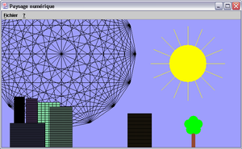
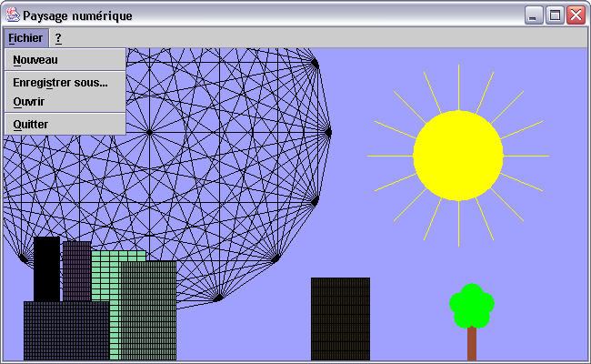
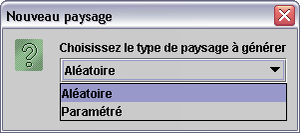
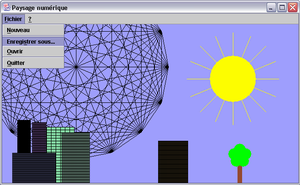
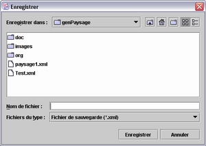
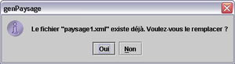
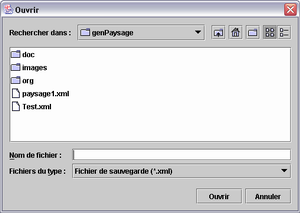
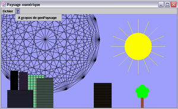

{kind=link}
{kind=link}
{kind=link}
{kind=link}
{kind=link}
{kind=link}
{kind=link}
{kind=link}
{kind=link}
{kind=link}

04-jan-2003
Table des matières
1.0
: fournit par M. Capuozzo.
1.1 : ajout des menus Fichier et A propos contenant sauvegarde, restauration,
quitter, et à propos.
1.2 : ajout de l'option Nouveau avec la possibilité de créer un paysage
aléatoire ou paramétré dans le menu Fichier.
1.3 : ajout du soleil dans le paysage.
1.4 : ajout d'arbres dans le paysage.
1.5 : ajout d'un filtre pour la sauvegarde et la restauration.
| Résultat final | Menu Fichier | Nouveau |
|  |  | |
| Nouveau | Enregistrement | Enregistrement |
|  |  |  |
| Enregistrement | Restauration | Restauration |
|  |  | |
| A propos | A propos | |
|  |
|
|
Création de la rubrique "A propos":
N'arrivant pas à gérer la fermeture de la fenêtre lors de l'utilisation d'un JDialog, j'ai utilisé la méthode showMessageDialog
de JOptionPane que j'ai personnalisé grâce a une image.
Fenêtre "A propos"
|
Icon image = new ImageIcon("./images/ermite.jpg"); JOptionPane.showMessageDialog(Paysage.this, "Projet de DAIGL de fin de 1er semestre\n"+ "Réalisation : Templier François\n"+ "Version : 1.5\n"+ "Date de fin de réalisation : 02/01/2003", "A propos de genPaysage", JOptionPane.INFORMATION_MESSAGE, image); |
Création d'un filtre pour le sauvegarde/restauration:
Voulant ajouter un filtre lors de la sauvegarde et de la restauration et n'y arrivant pas j'ai trouvé dans le JDK une classe
d'exemple sur les filtres. Je l'ai donc réutilisé en l'allégeant de tout ce qui m'étais inutile.
Filtre
|
Filtre filter = new Filtre(); filter.addExtension("xml"); filter.setDescription("Fichier de sauvegarde (*.xml)"); chooser.setFileFilter(filter); |
Tracé des rayon du soleil :
Je n'arrivais pas a placer les rayons du soleil comme je le voulais, je me suis donc inspiré de la planète en parcourant un
cercle trigonométrique et en plaçant des points en fonctions du nombre de rayon souhaité, reliant ensuite le centre de mon
soleil a chacun de ces points.
Positionnement des points sur le cercle:
|
for (int i=0; i<nbSommets; i++) { x1=ox+Math.cos(angle)*diametre; y1=oy+Math.sin(angle)*diametre; sommets.add(new Point((int)Math.round(x1),(int)Math.round(y1))); angle+=((2*Math.PI)/nbSommets); } |
|
g.fillOval(50, 50, diametre, diametre); for (int i=0; i<sommets.size(); i++){ p1=(Point) sommets.get(i); g.drawLine(50+diametre/2,50+diametre/2,p1.x,p1.y); } |
Aucune difficulté rencontrée dans cette classe.
{kind=link}